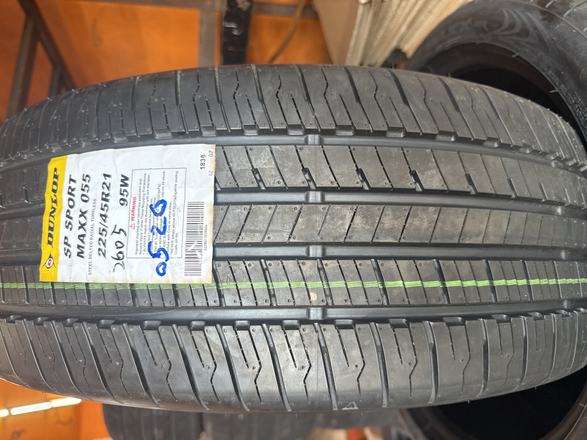

Dunlop SP Sport Maxx055 225/45R21

RM 970.00
Dunlop SP Sport Maxx 055 | 225/45 R21 95W | SUV Performance Tyre Engineered specifically for modern SUVs and crossovers, the Dunlop SP Sport Maxx 055 delivers sharp steering response, confident wet-weather braking, and a quiet, refined ride. Featuring an asymmetric tread pattern with wide circumferential grooves, it efficiently evacuates water to prevent aquaplaning while maintaining stable high-speed cornering grip. Specifications: • Brand / Model: Dunlop SP Sport Maxx 055 • Tyre Size: 225/45 R21 • Load Index: 95 (Max 690 kg per tyre) • Speed Rating: W (Up to 270 km/h) • Construction: Steel Belted Radial Tubeless Key Features: • Superior Wet & Dry Grip: High-silica tread compound enhances traction and braking performance on Malaysian wet roads. • Precise Handling: Reinforced outer shoulder blocks improve cornering stability for higher center-of-gravity SUVs. • Low Road Noise: Optimized pitch sequence minimizes tread noise for a smooth and comfortable highway drive. Common Vehicle Fitment (225/45 R21): • Mazda: CX-30, MX-30 (Popular 21-inch upgrade) • Toyota: Crown Crossover, C-HR (21-inch upgrade) • Lexus: UX (21-inch upgrade) • Honda: HR-V / Vezel (21-inch upgrade) Additional Info: • Price listed is for 1 piece (per tyre). • Free installation, high-speed wheel balancing, and new rubber tubeless valve included for walk-in installation at our Klang workshop.
Klang Hock Li Tyre Services Sdn Bhd, Klang, Selangor, Malaysia.
View live product details and enquire